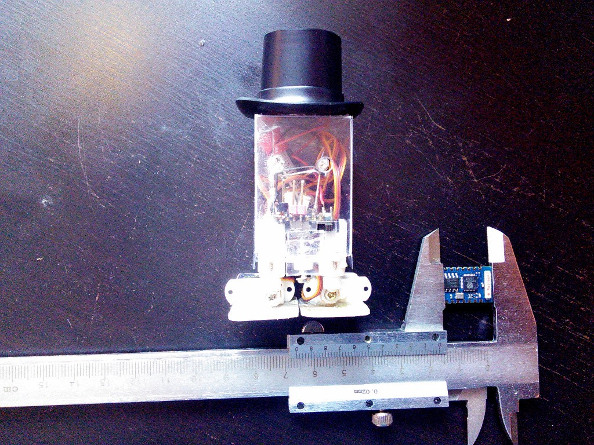

Began Coding¶
Published on 2015-01-15 in µBob biped robot.
A little bit of programming done. The repository with the source code is in the links.
So, basically, I have a Lua console over telnet over WiFi, and a convenient way to send files to the robot using netcat. Not having to connect the serial cables to do anything on it should make it all much more convenient.

Ah, right, the robot has a hat now, which actually helps it by moving its center of mass a little higher. Next to it you can see the ESP-03 module that I used – which is quite tiny!